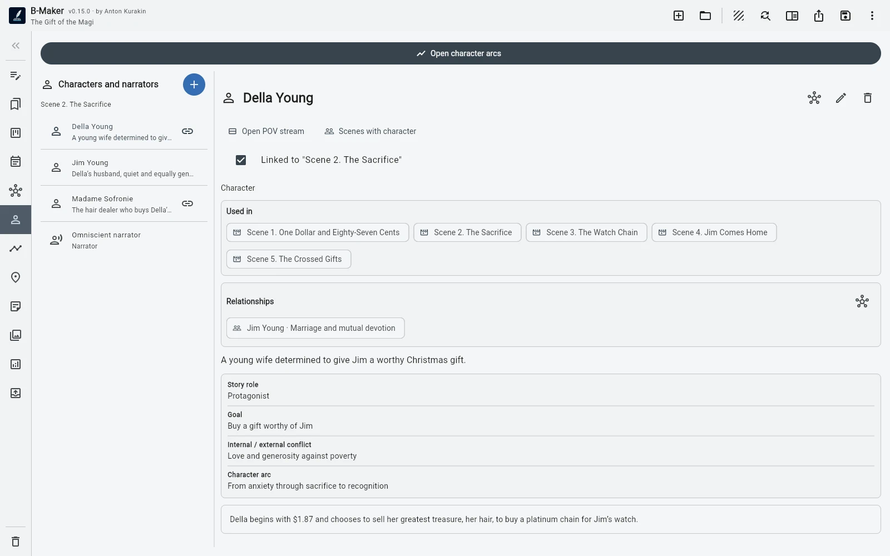

Plottr логичнее, если приоритет — глубина plotting, таймлайны, шаблоны и story bible. B-Maker — если важнее непрерывный путь от плана до готовой рукописи.
Глубина planning против непрерывности
Plottr строится вокруг таймлайнов, карточек сцен, сюжетных линий, персонажей, мест, заметок, тегов, серий и большой библиотеки шаблонов. Такой специализированный фокус полезен до и во время написания.
В B-Maker есть персонажи, отношения, арки, сюжетные линии, локации, story grid, доска рукописи, Idea Map и коллекции, но ключевое отличие — всё это связано с тем же проектом, где находится текст.
Где живёт рукопись
Plottr часто передаёт проект дальше в Word или Scrivener. B-Maker старается убрать этот переход: глава, сквозной редактор, версии, проверки, предпросмотр книги и экспорт находятся в одном проекте.
Специализированный планировщик может быть глубже в своей области, зато интегрированная система снижает количество ручных переносов между инструментами.
Кому подходит каждый подход
Авторам, которые строят работу вокруг готовых plotting-шаблонов, таймлайнов и series bible, может лучше подойти Plottr. Если вы начинаете с текста и добавляете планирование по мере роста проекта, логичнее B-Maker.
B-Maker также подходит, когда рядом с художественным текстом живут статьи, исследования и другие материалы.
Частые вопросы
Plottr сильнее для специализированного plotting?
Если нужен отдельный визуальный plotting с большим количеством шаблонов, Plottr может быть сильнее.
Можно пройти в B-Maker весь путь до экспорта?
Да. Тот же проект используется для письма, версий, аналитики, preview, издательской подготовки и экспорта.
Связанные гайды B-Maker
Программа для написания романа — планирование, текст, версии и публикация · Как организовать роман и не превратить письмо в администрирование · Программа для письма со встроенной Idea Map
Официальные источники
Возможности Plottr сверены с официальной страницей функций Plottr. Возможности B-Maker соответствуют текущей странице проекта.
Попробуйте этот процесс на реальном проекте.
Откройте B-Maker в браузере и начните с одной главы или статьи. Глубокие инструменты подключайте только тогда, когда они понадобятся проекту.